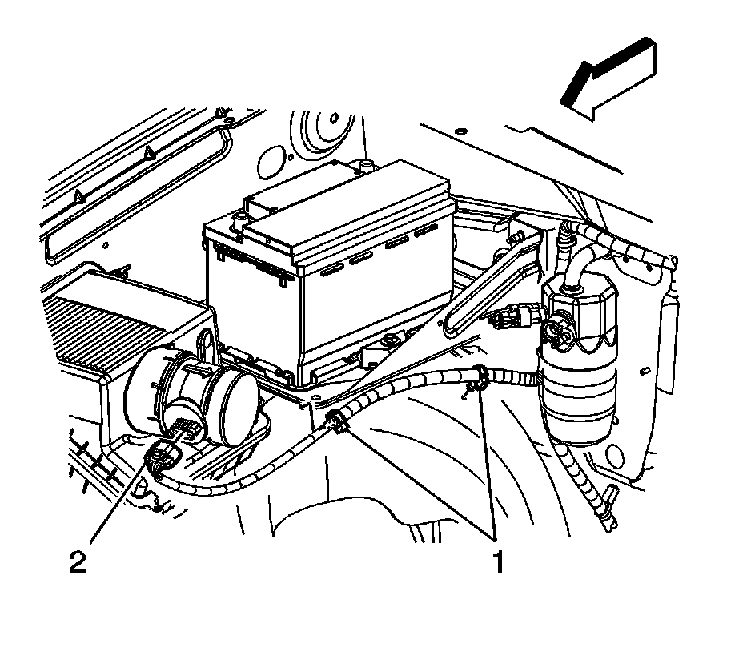
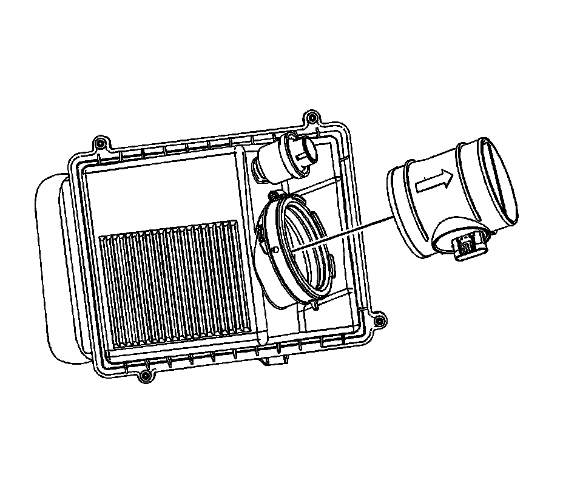

Air Flow Meter/Sensor: Service and Repair
MASS AIRFLOW SENSOR/INTAKE AIR TEMPERATURE SENSOR REPLACEMENT
REMOVAL PROCEDURE
IMPORTANT: Use care when handling the mass air flow (MAF)/intake air temperature (IAT) sensor. Do not dent, puncture, or otherwise damage the honeycell located at the air inlet end of the MAF/IAT. Do not touch the sensing elements or allow anything including cleaning solvents and lubricants to come in contact with them. Use a small amount of a non-silicone based lubricant, on the air duct only, to aid in installation.

1. Disconnect the engine wiring harness electrical connector (2) from the MAF/IAT sensor.

2. Loosen the MAF/IAT sensor adapter clamp.
3. Remove the MAF/IAT sensor from the air cleaner assembly.
INSTALLATION PROCEDURE
IMPORTANT: The embossed arrow on the MAF/IAT sensor indicates the proper air flow direction. The arrow must point toward the engine.
1. Install the MAF/IAT sensor to the air cleaner assembly.
2. NOTE: Refer to Fastener Notice.
Tighten the MAF/IAT sensor adapter clamp.
Tighten the clamp to 4 N.m (35 lb in).
3. Connect the engine wiring harness electrical connector (2) to the MAF/IAT sensor.